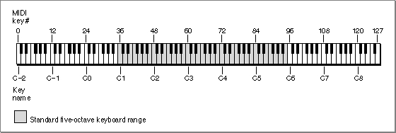
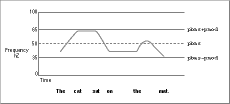

Important: Inside Macintosh: Sound is deprecated as of Mac OS X v10.5. For new audio development in Mac OS X, use Core Audio. See the Audio page in the ADC Reference Library.
Speech Attributes
Any given person has only one voice, but can alter the characteristics of his or her speech in a number of different ways. For example, a person can speak slowly or quickly and with a low or a high pitch. Similarly, the Speech Manager provides routines that allow you to modify these and other speech attributes, regardless of which voice is in use. A speech attribute is a setting defined for a class of voices or for all voices that affects the quality of speech produced by the Speech Manager. The Speech Manager provides routines to directly alter two speech attributes--speech rate and speech pitch. These routines are described in the section "Changing Speech Attributes" beginning on page 4-73. You can change two other speech attributes--pitch modulation and speech volume--by using the mechanism of speech information selectors, which is described in the section "Speech Information Selectors" beginning on page 4-39.The speech rate of a speech channel is the approximate number of words of text that the synthesizer should say in one minute. Slower speech rates make the speech easier to understand, but can be annoyingly tedious to listen to. Some applications, such as aids for the visually impaired, require very fast speech rates. Speech rates are expressed as fixed-point values. Each speech synthesizer determines it own range of speech rates. The speech pitch of a speech channel represents the middle pitch of the voice, roughly corresponding to the key in which a song is played. It is a fixed-point value in the range of 0.000 through 127.000, where 60.000 corresponds to middle C on a conventional piano. Each 1.000-unit change in a value corresponds to a musical half step. This is the same scale used in specifying MIDI note values, as described in the chapter "Sound Manager" in this book. Figure 4-3 shows a piano keyboard with the corresponding MIDI note values.
Figure 4-3 MIDI note values and corresponding piano keys

MIDI note values differ from speech pitch values in that they are always integral and have a wider range than speech pitch values. On the scale used to measure both MIDI note values and speech pitches, a change of +12 units corresponds to doubling the frequency (an increase of one octave), while a change of -12 units corresponds to halving the frequency (a decrease of one octave). A frequency is a precise indication of the number of hertz of a sound wave at any instant. If you need to convert between speech pitches and hertz, note that a speech pitch of 60.000 corresponds to 261.625 Hz. Meanwhile, when a speech pitch value rises by one unit, the corresponding hertz value is multiplied by the twelfth root of 2, defined by the Sound Manager constant
twelfthRootTwo. The following formula thus converts a speech pitch into hertz:hertz =
twelfthRootTwo(pitch - 60.000) * 261.625In order to calculate speech pitch in terms of hertz, you can use the following formula:
pitch = 60 + (ln(hertz) - ln(261.625))/ln(
twelfthRootTwo)Typical voice frequencies might range from around 90 hertz for a low-pitched male voice to about 300 hertz for a high-pitched child's voice. These frequencies correspond to approximate pitch values in the ranges of 30.000 to 40.000 and 55.000 to 65.000, respectively.
You can determine the current speech pitch on a speech channel by calling the
GetSpeechPitchfunction, described on page 4-75. You can change the current pitch by calling theSetSpeechPitchfunction, described on page 4-76. You can also determine the current speech rate and change it by using theGetSpeechRatefunction, described on page 4-73 and theSetSpeechRatefunction, described on page 4-74. Changes in speech pitch and speech rate are effective immediately (as soon as the synthesizer can respond), even if they occur in the middle of a word.Pitch is the listener's subjective interpretation of speech's average frequency. The speech pitch specified is a baseline value corresponding to a particular frequency, from which the actual frequency of generated speech varies with the rises and falls of the intonation of speech. When a person speaks, there is a tune to the speech. Often you are more aware of the singsong quality, or change in the range of speech pitch, of a language that you don't know rather than one that you speak. The synthesizer must generate this tune in order to sound more human-like. Speech pitch is always described by a set of numbers that specify the range of pitch of the tune a synthesizer generates. This set of numbers can be the middle pitch and how far to deviate from that pitch or it can be the set of pitches within which the semi-tones of the tune can vary. Figure 4-4 shows an example of the range of pitches produced as the phrase "The cat sat on the mat." is spoken.
Figure 4-4 An example of pitch range for a voice

To simulate the variability in frequency of human speech, the Speech Manager defines the speech attribute of pitch modulation. The pitch modulation of a speech channel is the maximum amount by which the actual frequency of speech generated may deviate from the speech pitch.
Pitch modulation is also expressed as a fixed-point value in the range of 0.000 to 100.000. A pitch modulation value of 0.000 corresponds to a monotone in which all speech is generated at the frequency corresponding to the speech pitch. Speech generated at this pitch modulation would sound unnaturally robotic. Given a speech pitch value of 46.000, a pitch modulation of 2.000 would mean that the widest possible range of pitches corresponding to the actual frequency of generated text would be 44.000 to 48.000.
In some synthesizers, the actual pitch modulation may be restricted to a certain range. For example, if a synthesizer supported the full range of pitch modulations, a pitch modulation of 100.000 would result in unintelligible speech. In fact, however, some synthesizers, even with such a setting, produce speech that sounds virtually monotone. Even within a synthesizer, different voices might have different valid pitch modulation ranges. The Speech Manager provides no mechanism for obtaining the range of valid pitch modulations, although some synthesizers may allow applications designed to work with those synthesizers to obtain such ranges.
You can obtain the pitch modulation by using the
GetSpeechInfofunction with thesoPitchModspeech information selector, and you can change the pitch modulation by using theSetSpeechInfofunction with the same selector. Speech information selectors are described in "Speech Information Selectors" beginning on page 4-39.The speech volume of a speech channel is the average amplitude at which the channel generates speech. Volumes are expressed in fixed-point units ranging from 0.0 through 1.0. A value of 0.0 corresponds to silence, and a value of 1.0 corresponds to the maximum possible volume. Volume units lie on a scale that is linear with amplitude or voltage. A doubling of perceived loudness corresponds to a doubling of the volume.
Note that just as a speech synthesizer does not generate speech at a constant frequency, it does not generate speech at a constant amplitude. Even when the speech rate is high, brief pauses break up a steady stream of speech. The speech volume is, like speech pitch, an indicator of an average. There is no way to determine or change the modulation of speech volume.
A final speech attribute is prosody, the rhythm, modulation, and emphasis patterns of speech.There is no simple mechanism for your application to determine what rhythmic patterns a speech synthesizer is applying to speech. However, you can exert some control over prosody by using prosodic control symbols, discussed in "Prosodic Control Symbols" on page 4-34. Also, you can disable ending prosody, the modulation that distinguishes the end of a sentence or statement in normal speech, by using the
SpeakBufferfunction, described on page 4-57.